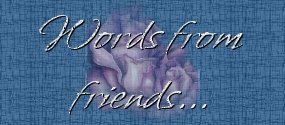
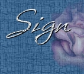

With this ring I thee wed...
Thirty one years ago these words were said
Two young lives joined as one
Though not all days were rosey
And some not always fun
Together they stand shoulder to shoulder
And face any task, like two mighty soldiers
With two beautiful children, all grown
Their love to the world, a gift they have shown.



Page created by D'Fire for Lady Lisa and Ken
Artwork (c) Jody Bergsma

|